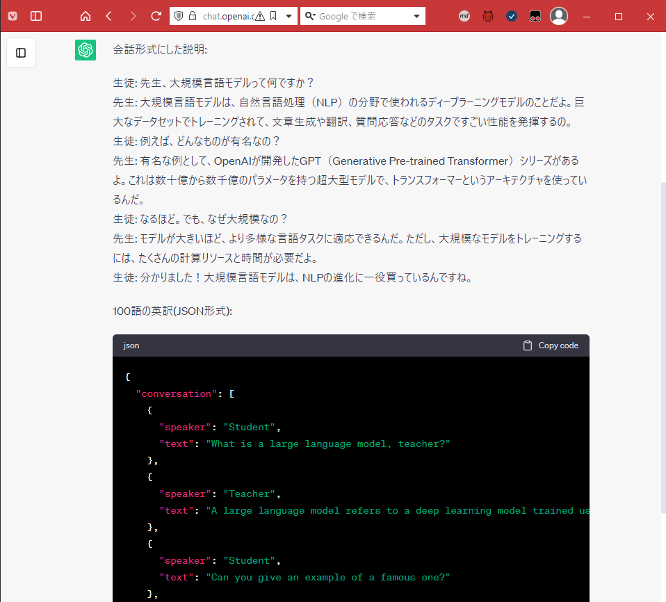
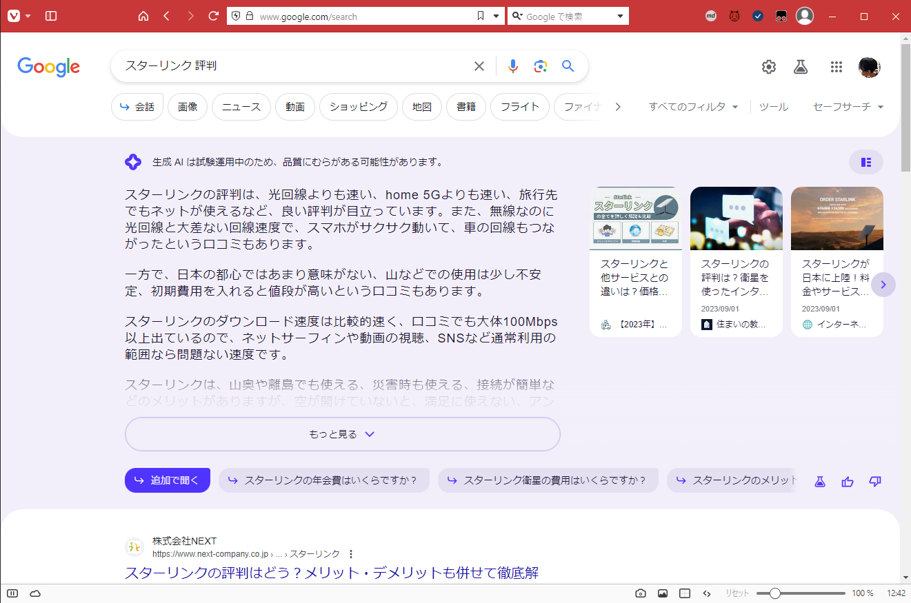

## ChatGPT 入門 <br> 業務 DX グループ<br> 佐田和也
<p class="headline">発表の内容</p> - ChatGPT の概要 - ChatGPT のはじめ方 - デモ - 基本的な使い方 - アイデア出し - 三つ並べ - その他 - 使用上の注意 (生成 AI 全般) - 生成 AI 関連のその他の話題
<p class="headline">ChatGPT の概要</p> - '22年末～注目されているチャットボット - 人が書いたような自然な文章を生成 - 特定の分野に特化していない (汎用的)
<p class="headline">経緯</p> - 2022/11月 OpenAI がプロトタイプを公開 - 2ヶ月でアクティブユーザが1億人に到達 - 2023/2～3月、有料版や API を公開 - ChatGPT 以外にも同様のサービスが出てきた
<p class="headline">ChatGPT を使う前に (注意)</p> - 機密事項や個人情報を入力しない - 出た答えを外向けの文書でそのまま使わない
<p class="headline">ChatGPT のはじめ方</p> chat.openai.com でアカウントを作る 
<p class="headline">ChatGPT のはじめ方</p> ログイン後の画面 
<p class="headline">ChatGPT のはじめ方</p> 何か入力してチャットを始める 
<p class="headline">ChatGPT のはじめ方</p> 返答が出力され、記録されていく 
<p class="headline">ChatGPT のはじめ方</p> 複数のチャットを使い分ける 
<p class="headline">デモ (基本的な使い方)</p> 「熱中症対策について教えて」 
<p class="headline">デモ (基本的な使い方)</p> 「熱中症対策について教えて」 
<p class="headline">デモ (基本的な使い方)</p> 「ひとことで言うと？」 
<p class="headline">デモ (基本的な使い方)</p> 「ひとことで言うと？」 
<p class="headline">デモ (基本的な使い方)</p> 「それをパリピ風に言ってください」 
<p class="headline">デモ (基本的な使い方)</p> 「それをパリピ風に言ってください」 
<p class="headline">デモ (情報の古さ)</p> 「ChatGPT のスマホアプリはありますか」 
<p class="headline">デモ (情報の古さ)</p> 「ChatGPT のスマホアプリはありますか」 
<p class="headline">情報の古さ</p> - GPT-3.5 は2021年9月くらいまでの知識 - 自社 (OpenAI) の情報であっても
<p class="headline">スマホアプリ</p> - iOS 版と Android 版がある - ストアに類似アプリが多いので注意 - Web 版も普通に使えるのでお好みで
スマホアプリ
iOS 版
スマホアプリ
Android 版
<p class="headline">ChatGPT Plus (有料版)</p> - 月額 $20 - 新しいモデル (AI) で ChatGPT を使える - より新しい情報、より正しい回答<br> ※GPT-4 の知識は2022年1月くらいまで - ~Web を検索して答えさせることも可能~ - プラグインが使える<br> (参考: [解説記事](https://app-liv.jp/ai/articles/5/))
<p class="headline">デモ (アイデア出し)</p> <span style="font-size: .8em">「DX を推進する部署のキャッチフレーズを考えてください」</span> 
<p class="headline">デモ (アイデア出し)</p> <span style="font-size: .8em">「DX を推進する部署のキャッチフレーズを考えてください」</span> 
<p class="headline">デモ (アイデア出し)</p> 「日本語で、5つの案を出してください」 
<p class="headline">デモ (アイデア出し)</p> 「日本語で、5つの案を出してください」 
<p class="headline">デモ (アイデア出し)</p> <span style="font-size: .9em">「案3で、「ブリリアント」をもっと分かりやすく…」</span> 
<p class="headline">デモ (アイデア出し)</p> <span style="font-size: .9em">「案3で、「ブリリアント」をもっと分かりやすく…」</span> 
<p class="headline">デモ (ハルシネーション)</p> ハルシネーション (AI の幻覚) とは : 「AI がもっともらしい嘘を出力してしまうこと」
<p class="headline">デモ (ハルシネーション)</p> 「ヌートバーについて教えて」 
<p class="headline">デモ (ハルシネーション)</p> [参考] Wikipedia の記事 
<p class="headline">デモ (ハルシネーション)</p> ChatGPT の回答 
<p class="headline">デモ (ハルシネーション)</p> 詳細を追及してみる 
<p class="headline">デモ (ハルシネーション)</p> ChatGPT が知識の範囲外だったことを認める 
<p class="headline">デモ (ハルシネーション)</p> ちなみに、"Nootropics" は実際にあります (!) 
<p class="headline">デモ (コーディング)</p> 「Excel に架空の住所録を生成するマクロを書いて」 
<p class="headline">デモ (コーディング)</p> 生成されたマクロ ```visualbasic Sub GenerateAddressList() Dim ws As Worksheet Set ws = ThisWorkbook.Sheets("Sheet1") ' シート名を適宜変更してください ' ランダムな名前と住所を生成するための配列 Dim names() As String names = Split("Alice,Bob,Charlie,David,Eve,Frank,Grace,Henry,Ivy,Jack", ",") Dim addresses() As String addresses = Split("123 Main St,456 Park Ave,789 Elm St,321 Maple Rd,567 Oak Ave,890 Pine St,432 Cedar Rd,876 Birch Ave,901 Willow St,234 Cherry Ave", ",") ' ランダムな電話番号を生成するための関数 Function GeneratePhoneNumber() As String Dim phoneNumber As String phoneNumber = "555-" & Int((9999 - 1000 + 1) * Rnd + 1000) & "-" & Int((9999 - 1000 + 1) * Rnd + 1000) GeneratePhoneNumber = phoneNumber End Function ' 住所録を生成 Dim i As Integer For i = 1 To 10 ' ランダムな名前と住所を選択 Dim nameIndex As Integer Dim addressIndex As Integer nameIndex = Int((UBound(names) - LBound(names) + 1) * Rnd + LBound(names)) addressIndex = Int((UBound(addresses) - LBound(addresses) + 1) * Rnd + LBound(addresses)) ' データをシートに書き込み ws.Cells(i, 1).Value = names(nameIndex) ws.Cells(i, 2).Value = addresses(addressIndex) ws.Cells(i, 3).Value = GeneratePhoneNumber() Next i ' 列幅を自動調整 ws.Columns.AutoFit End Sub ```
<p class="headline">デモ (コーディング)</p> 実行結果 
### ChatGPT は、VBA の文法を<br>理解している訳ではない
<p class="headline">デモ (コーディング)</p> 簡単な修正をしたマクロ ```visualbasic ' ランダムな電話番号を生成するための関数 Function GeneratePhoneNumber() As String Dim phoneNumber As String phoneNumber = "555-" & Int((9999 - 1000 + 1) * Rnd + 1000) & "-" & Int((9999 - 1000 + 1) * Rnd + 1000) GeneratePhoneNumber = phoneNumber End Function Sub GenerateAddressList() Dim ws As Worksheet Set ws = ThisWorkbook.Sheets("Sheet1") ' シート名を適宜変更してください ' ランダムな名前と住所を生成するための配列 Dim names() As String names = Split("Alice,Bob,Charlie,David,Eve,Frank,Grace,Henry,Ivy,Jack", ",") Dim addresses() As String addresses = Split("123 Main St,456 Park Ave,789 Elm St,321 Maple Rd,567 Oak Ave,890 Pine St,432 Cedar Rd,876 Birch Ave,901 Willow St,234 Cherry Ave", ",") ' 住所録を生成 Dim i As Integer For i = 1 To 10 ' ランダムな名前と住所を選択 Dim nameIndex As Integer Dim addressIndex As Integer nameIndex = Int((UBound(names) - LBound(names) + 1) * Rnd + LBound(names)) addressIndex = Int((UBound(addresses) - LBound(addresses) + 1) * Rnd + LBound(addresses)) ' データをシートに書き込み ws.Cells(i, 1).Value = names(nameIndex) ws.Cells(i, 2).Value = addresses(addressIndex) ws.Cells(i, 3).Value = GeneratePhoneNumber() Next i ' 列幅を自動調整 ws.Columns.AutoFit End Sub ```
<p class="headline">デモ (コーディング)</p> 簡単な修正で動くようになった 
<p class="headline">デモ (コーディング)</p> 「住所と名前を日本語にしてください」 
<p class="headline">デモ (コーディング)</p> 実行結果 
<p class="headline">デモ (三つ並べ)</p> 「三つ並べゲームをしましょう」 
<p class="headline">デモ (三つ並べ)</p> 
<p class="headline">デモ (三つ並べ)</p> 
<p class="headline">デモ (三つ並べ)</p> 
<p class="headline">デモ (三つ並べ)</p> 
<p class="headline">デモ (三つ並べ)</p> 
<p class="headline">デモ (三つ並べ)</p> 
<p class="headline">デモ (三つ並べ)</p> 
<p class="headline">デモ (三つ並べ)</p> 
<p class="headline">デモ (三つ並べ)</p> 
<p class="headline">デモ (三つ並べ)</p> - ChatGPT は勝とうとしたり、勝敗を正しく判定したりしない - マクロの時と同じく、ロジックを理解している訳ではない
<p class="headline">デモ (プロンプト・エンジニアリング)</p> プロンプト・エンジニアリングとは : 「言語モデルを効率的に使用するために、<br> 命令 (プロンプト) を開発・最適化する学問分野」
<p class="headline">デモ (プロンプト・エンジニアリング)</p> - 出力の体裁を指定する - 必要に応じて引用符を使う ``` 以下の「説明」を、素人にも分かるように先生と生徒の会話にして、 それを100語の英語に翻訳して、JSON 形式で出力してください。 説明: """ 大規模言語モデルは、自然言語処理（NLP）の分野において、巨大なデータセットを用いてトレーニングされた深層学習モデルのことを指します。これらのモデルは、テキストデータを理解し、生成する能力を持っており、文章生成、翻訳、質問応答、意図理解などのタスクで優れたパフォーマンスを示します。 大規模言語モデルの中でも特に有名なものとしては、OpenAIが開発したGPT（Generative Pre-trained Transformer）シリーズがあります。GPTは、トランスフォーマーと呼ばれるアーキテクチャをベースにし、数億から数千億のパラメータを持つ非常に大きなモデルです。 大規模言語モデルは、その巨大なサイズと複雑性のため、トレーニングには大量の計算リソースと時間が必要となります。しかし、その一方で、多様な自然言語タスクに対して高度な性能を示すことができるため、NLPの分野に革新をもたらしています。 """ ```
出力

出力
出力された JSON (135語) ```json { "conversation": [ { "speaker": "Student", "text": "What is a large language model, teacher?" }, { "speaker": "Teacher", "text": "A large language model refers to a deep learning model trained using vast datasets in the field of Natural Language Processing (NLP). These models have the ability to understand and generate text, showing impressive performance in tasks like text generation, translation, question answering, and intent understanding." }, { "speaker": "Student", "text": "Can you give an example of a famous one?" }, { "speaker": "Teacher", "text": "One famous example is the GPT (Generative Pre-trained Transformer) series developed by OpenAI. GPT is an extremely large model with billions to trillions of parameters, based on the Transformer architecture." }, { "speaker": "Student", "text": "Why are they so large?" }, { "speaker": "Teacher", "text": "Larger models can handle a wider range of language tasks effectively. However, training such large models requires a significant amount of computational resources and time." }, { "speaker": "Student", "text": "I see! Large language models are contributing to the advancement of NLP then." } ] } ```
<p class="headline">デモ (プロンプト・エンジニアリング)</p> - 「JSON 形式」と言っただけで、"speaker", "text" などの項目名を決めて出力している - 一般的な作法を類推するのは得意なので、それを利用すると良い - ネット上で様々なテクニックが提案されている<br> (参考: [プロンプトのコツ](https://dekiru.net/article/24267/))
<p class="headline">使用上の注意 (生成 AI 全般)</p> - 生成 AI では、プロンプト入力時や生成物の利用時に注意すべきことがある - JDLA (日本ディープラーニング協会) から、ガイドラインが提供されている<br> https://www.jdla.org/document/#ai-guideline - これを元に社内ガイドラインを作ることが推奨されている
<p class="headline">使用上の注意 (生成 AI 全般)</p> JDLA のガイドライン (初版) の目次 1. 本ガイドラインの目的 1. 本ガイドラインが対象とする生成 AI 1. 生成 AI の利用が禁止される用途 1. 本ガイドラインの構成 1. **データ入力に際して注意すべき事項** 1. **生成物を利用するに際して注意すべき事項**
<p class="headline">使用上の注意 (生成 AI 全般)</p> データ入力に際して注意すべき事項 (概要) - 機密事項や個人情報を入力しない <br>ChatGPT に関して - OpenAI は個人情報は収集しないと言っているが、会話履歴は保存される - 履歴を保存しないように設定しても、最大で30日は保存される
<p class="headline">使用上の注意 (生成 AI 全般)</p> 生成物を利用するに際して注意すべき事項 (概要) - 著作権に触れていないか - 誤解を生む表現になっていないか - ハルシネーション (もっともらしい嘘) はないか
<p class="headline">その他のチャット AI</p> ChatGPT が広まった後に<br>生成系のチャット AI が急増した - Google SGE - Bing チャット
<p class="headline">その他のチャット AI</p> Google SGE<br> 
<p class="headline">その他のチャット AI</p> Google SGE<br> - Google の検索画面で利用可能 - 検索結果を統合・要約してくれる - 試験運用中 - 要約が表示されないこともある
<p class="headline">その他のチャット AI</p> Bing チャット<br> <img src="img/bingchat_sidebar.png" width="80%">
<p class="headline">その他のチャット AI</p> Bing チャット<br> - GPT-4 を使っているが無料 - 検索結果を統合・要約してくれる - 画像生成が可能 (個人アカウントのみ) - 文章生成ツールも備わっている - チャットだけなら [bing.com](https://www.bing.com/search?q=Bing+AI&showconv=1&FORM=hpcodx) でも利用可能
<p class="headline">画像生成 AI</p> ChatGPT より早く、2022年夏ごろから<br>「画像生成 AI」が話題になっていた - Stable Diffusion - DALL-E 2 - Midjourney
<p class="headline">画像生成 AI</p> Stable Diffusion<br> <br> "a photograph of an astronaut riding a horse"
<p class="headline">画像生成 AI</p> Stable Diffusion - オープンソースの画像生成モデル - Hugging Face のデモ (停止中) <span style="font-size: .8em">https://huggingface.co/spaces/stabilityai/stable-diffusion</span> - Dream Studio (有料の Web サービス) https://beta.dreamstudio.ai - Easy Diffusion (フリーのインストーラ) https://github.com/easydiffusion/easydiffusion
<p class="headline">画像生成 AI</p> DALL-E 2<br> <br> "Teddy bears working on new AI research underwater with 1990s technology"
<p class="headline">画像生成 AI</p> DALL-E 2 - ChatGPT と同じ OpenAI のモデル https://labs.openai.com/ - 無料で使える回数が決まっている - 無料分は毎月 (少し) 追加される - ChatGPT と同じく API を使える
<p class="headline">その他の話題</p> ChatGPT 以外の LLM (大規模言語モデル) | | | |-|-| |[Bard](https://bard.google.com) (Google)|[大きなアップデート](https://news.yahoo.co.jp/articles/7d3b2b3ce34a6aafc4f9dd94b8838b60f8ee10de) があった| |[Llama2](https://ai.meta.com/llama/) (Meta)|(ほぼ) オープンソース| |[Weblab-10B](https://huggingface.co/matsuo-lab) (東大)|非商用で無料公開| |Gemini (Google)|[2023年後半リリース予定](https://www.suzukikenichi.com/blog/google-is-developing-a-new-ai-system-called-gemini/)| |AppleGPT (Apple)|開発中との噂|
<p class="headline">その他の話題</p> その他の生成 AI 関連の話題 - [東京都「文章生成AI利活用ガイドライン」公開](https://www.metro.tokyo.lg.jp/tosei/hodohappyo/press/2023/08/23/14.html) - [デジタル庁「ChatGPTを業務に組み込むための手引き」公開](https://ascii.jp/elem/000/004/152/4152156/) - [米俳優組合がストライキ (生成 AI の使用をめぐって)](https://www.itmedia.co.jp/news/articles/2307/26/news084.html) - [イーロン・マスクが AI の会社 (xAI) を設立](https://www.cnn.co.jp/tech/35206500.html) - [サム・アルトマンがワールドコインを発表](https://forbesjapan.com/articles/detail/64821)